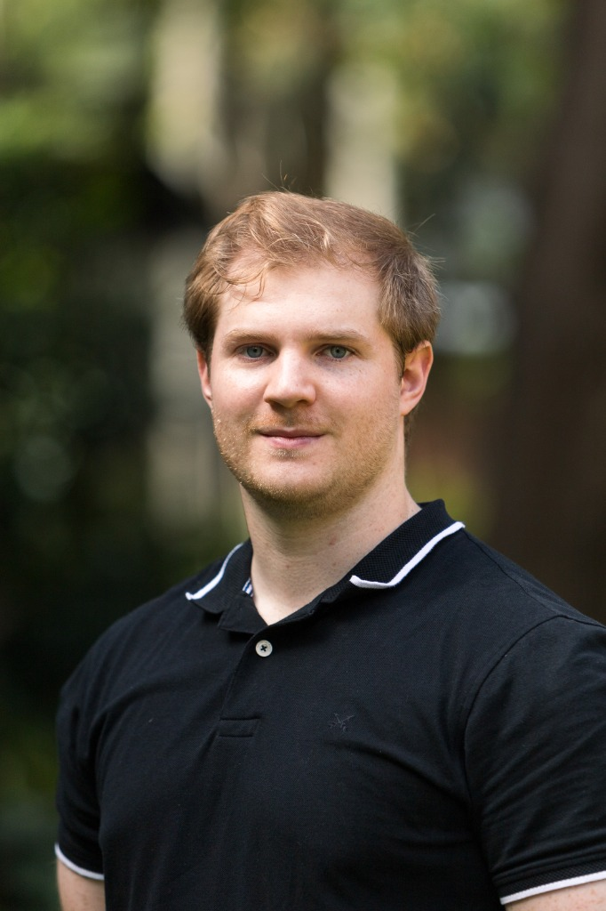

Dr. Zachary Aldiss
Postdoctoral Research Associate
I am a Postdoctoral Research Associate at the University of Illinois Urbana-Champaign. My work sits at the intersection of quantitative genetics, genomics, and advanced molecular biology, with a clear mission: to develop and implement innovative, interactive tools that help breeders and growers maximize genetic diversity, improve profitability, and deliver climate-resilient crops.
My research leverages genomic prediction, high-throughput phenotyping, novel allele identification, and genome editing to translate complex plant biology into scalable agricultural solutions. Ultimately, I am driven by the urgent global challenge of securing sustainable and profitable food production for the future and I enjoy building new tools to help us get there.
